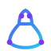
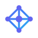
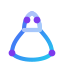
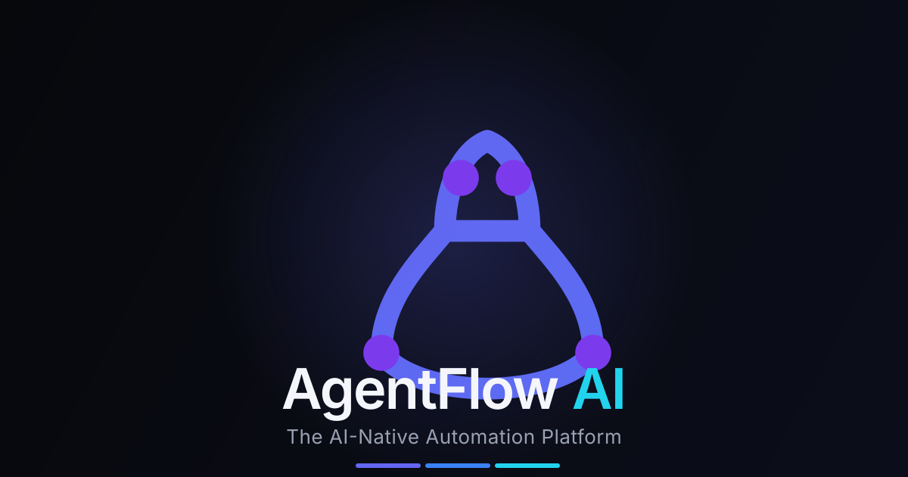

The AI-Native Automation Platform. A minimal, geometric identity built around one idea: a single continuous loop that carries an agent through Plan → Reason → Execute → Learn → Improve. Designed to be recognizable at 16×16 and premium at any size.
Recommended Mark
PRIMARY · CONCEPT B

The Flow Loop
One continuous closed path — the workflow loop stays the foundation. Its upper counter curves into a hidden "A" via negative space (rounded apex + waist crossbar); the lower half is the execution swoop. Four balanced nodes ride the loop: Plan, Reason, Execute, Learn. Stroke thickened ~14%, perfect symmetry, every corner rounded, scales clean from 16px.
Five Concepts

A · Interconnected Nodes
Hub + diamond ring — an intelligent workflow graph.
An "A" built entirely from connected workflow paths.
E · Continuous Loop
A single loop with directional flow = autonomous execution.
Adaptations
App Icon
Gradient tile + white loop. iOS / Android / desktop.
Favicon
Dot-free loop for crisp 16px rendering.
Monochrome
Single-color form for stamps, etch, print.
Loading Spinner
Flow traveling the loop — live below.

Animated Logo
A flow segment travels the loop while the four cycle nodes pulse in sequence (Plan → Reason → Execute → Learn) — the brand's operating model, in motion.
Dark Ink
Near-white loop on dark surfaces.

Splash
App-launch splash (1024, animated).

Social Preview
Open Graph / X / LinkedIn card (1200×630).
Color Palette
Deep Indigo #4338CA
Indigo #6366F1
Electric Blue #3B82F6
Cyan #22D3EE
Purple #7C3AED
Gradient: #6366F1 → #3B82F6 → #22D3EE (diagonal, indigo→blue→cyan). Slate surfaces: #0B1020 / #11182E. Text: #E8ECF6 on dark, #0F172A on light.
Typography
Geist — the system voice
Display & UI: Geist (already in your Next.js setup) — weights 450–650, tight tracking (-.01em to -.02em) for headings. Alternative: Inter. Mono: Geist Mono for code/logs. Numerals: tabular for dashboards.
Scale: 4 · 8 · 12 · 16 · 24 · 32 · 48 · 64. Clear-space: keep a minimum 1× mark-height margin around the logo. Minimum mark size: 16px (favicon) / 24px (UI).
Usage
Use the gradient loop on dark surfaces, or white/mono on light.
Respect clear-space equal to the mark height.
Use the dot-free loop at ≤24px; add cycle nodes only ≥64px.
Don't recolor the gradient or add shadows/glows.
Don't stretch, rotate, or place on busy photos without contrast.
Don't swap in generic AI icons (robot, brain, circuit, bolt, hex).
Animation Ideas
• Intro: loop draws in as a single stroke (dashoffset → 0), then the 4 nodes pop in clockwise.
• Processing: spinner — a short segment travels the loop continuously (see spinner above).
• Success: the loop completes and pulses cyan once.
• Idle: nodes breathe (opacity 1↔.2) in sequence to imply a live agent.
• Page load: logo draws, then morphs into the favicon state in the tab.
• Keep motion ≤400ms, ease-out, one gesture at a time. Respect prefers-reduced-motion.